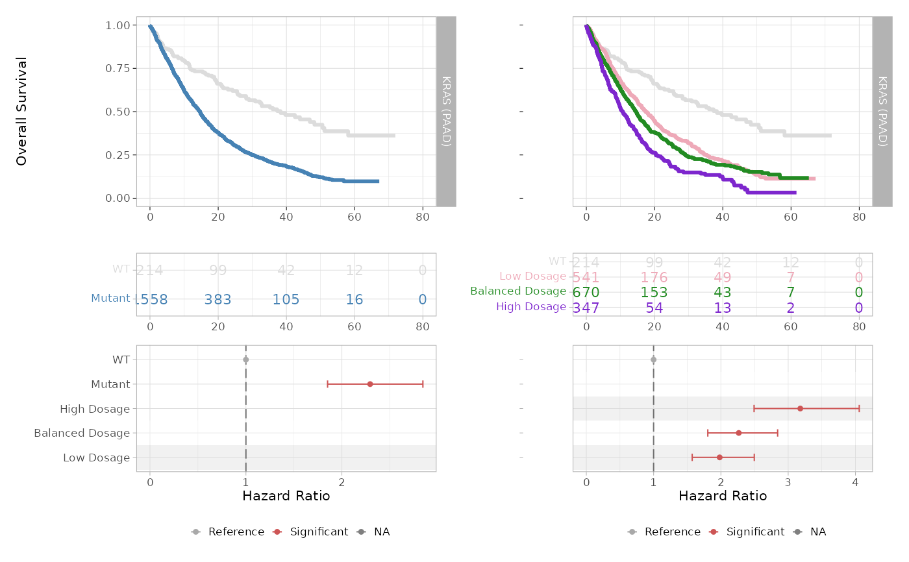

Visualise survival analysis based on INCOMMON classes.
Source:R/plot_survival_analysis.R
plot_survival_analysis.RdVisualise survival analysis based on INCOMMON classes.
Usage
plot_survival_analysis(
x,
tumor_type,
gene,
cox_covariates = c("age", "sex", "tmb")
)Arguments
- x
A list of objects of class
'INCOMMON'containing the classification results for multiple samples, as produced by using functionclassify.- tumor_type
The selected tumour type.
- gene
The selected gene.
- cox_covariates
A character vector listing the covariates to be used in the multivariarte regression.
Value
An object or a list of class 'ggplot2' showing Kaplan-Meier curves and
Cox regression forest plot.
Examples
# First load example classified data
data(MSK_PAAD_output)
# Perform survival analysis based on the classification of KRAS mutant samples of pancreatic adenocarcinoma
MSK_PAAD_output = kaplan_meier_fit(x = MSK_PAAD_output, tumor_type = 'PAAD', gene = 'KRAS', survival_time = 'OS_MONTHS', survival_status = 'OS_STATUS')
#> Joining with `by = join_by(id)`
#> Call: survfit(formula = "survival::Surv(OS_MONTHS, OS_STATUS) ~ group",
#> data = data)
#>
#> 7 observations deleted due to missingness
#> n events median 0.95LCL 0.95UCL
#> WT 214 92 38.3 28.98 51.1
#> Low Dosage 541 344 17.4 15.34 19.8
#> Balanced Dosage 670 417 14.6 13.34 15.8
#> High Dosage 347 237 10.7 9.36 12.5
# Perform Cox regression
MSK_PAAD_output = cox_fit(x = MSK_PAAD_output, tumor_type = 'PAAD', gene = 'KRAS', survival_time = 'OS_MONTHS', survival_status = 'OS_STATUS', covariates = c('age', 'sex', 'tmb'), tmb_method = ">10")
#> [1] "Cox fit with INCOMMON groups:"
#> Call:
#> survival::coxph(formula = formula %>% stats::as.formula(), data = data %>%
#> as.data.frame())
#>
#> coef exp(coef) se(coef) z p
#> groupBalanced Dosage 0.8179 2.2658 0.1159 7.058 1.69e-12
#> groupHigh Dosage 1.1569 3.1801 0.1242 9.318 < 2e-16
#> groupLow Dosage 0.6840 1.9818 0.1177 5.810 6.24e-09
#>
#> Likelihood ratio test=102.1 on 3 df, p=< 2.2e-16
#> n= 1772, number of events= 1090
#> (7 observations deleted due to missingness)
#> [1] "Pairwise tests:"
#>
#> Simultaneous Tests for General Linear Hypotheses
#>
#> Fit: survival::coxph(formula = formula %>% stats::as.formula(), data = data %>%
#> as.data.frame())
#>
#> Linear Hypotheses:
#> Estimate Std. Error z value
#> `groupHigh Dosage` - `groupBalanced Dosage` == 0 0.33900 0.08156 4.156
#> `groupLow Dosage` - `groupBalanced Dosage` == 0 -0.13391 0.07299 -1.835
#> Pr(>|z|)
#> `groupHigh Dosage` - `groupBalanced Dosage` == 0 6.45e-05 ***
#> `groupLow Dosage` - `groupBalanced Dosage` == 0 0.123
#> ---
#> Signif. codes: 0 ‘***’ 0.001 ‘**’ 0.01 ‘*’ 0.05 ‘.’ 0.1 ‘ ’ 1
#> (Adjusted p values reported -- single-step method)
#>
plot_survival_analysis(x = MSK_PAAD_output, tumor_type = 'PAAD', gene = 'KRAS')
#> Scale for x is already present.
#> Adding another scale for x, which will replace the existing scale.
#> Scale for x is already present.
#> Adding another scale for x, which will replace the existing scale.
#> Joining with `by = join_by(var)`
#> Joining with `by = join_by(var)`
#> Warning: Removed 3 rows containing missing values or values outside the scale range
#> (`geom_point()`).
#> Warning: Removed 1 row containing missing values or values outside the scale range
#> (`geom_point()`).
